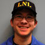

About Us
We are Lens and Lights, a WPI club which provides quality lighting, sound, and projection services to the WPI campus and surrounding area. We are a group of very passionate individuals who are extremely passionate about what we do!
Membership Requirements:
An active member needs to actively participate in five events in three of the areas listed below. Attendance to three consecutive meetings is also required (unless otherwise arranged). These requirements must be completed within a single semester. Having all these requirements does not necessarily mean that a member will be automatically activated; each activation will be decided on an individual basis by the executive board. It is also preferable to have worked at least one L3 or S3 before being activated. Active members are eligible to crew chief events, receive an LnL identification card, and can vote in club affairs.
- P16 - 16mm Movie Projection
- P35 - 35mm Movie Projection
- P70 - 70mm Movie Projection
- S1 - 'Small Sound'; Single amp, speakers full ranged
- S2 - 'Medium Sound'; Rack of amps, speakers
- S3 - 'Large Sound'; Rack of amps, two stacks, crossover and monitors
- S4 - 'Huge Sound'; Rack of amps, four stacks, crossover and monitors
- L1 - 'Small light'; Non dimmable, trees and gels
- L2 - 'Medium light'; Dimmable, up to 12 lights and gels
- L3 - 'Large light'; Dimmable, truss, rigging, automated fixtures and gels
- L4 - 'Huge light'; Dimmable, truss, rigging, automated fixtures and gels
- LS - 'Lights & Sound'; Coffeehouse setup
- P - Power event with edison or Cam
- TSS - Ticket Sales & Security
Officers:

President - Dan Hullihen (2014)
The president's job involves diplomacy - keeping the peace among club members and officers, serving as a liaison between the Club and WPI, and keeping the Club running smoothly.
Vice-President - Jared Erb (2013)
The VP is in charge of events, both making sure that there are people available to do them and quoting prices for the services we provide. They must also make sure the equipment requested is available before they can guarantee that services will be provided.

Technical Director - Mikhail Tan (2013)
The Technical Director (or TD, as the position is commonly referred to) involves a lot of work. The TD's responsibilities include the purchase of new equipment, repair and upkeep of old equipment and the training of members. Also, the TD keeps the ATD's in line. A good knowledge of electronics and electricity, as well as a good knowledge of audio and lighting equipment are traits found in the TD. Also, the TD typically knows which end of the soldering iron to hold, but still manages to burn themself.

Head Projectionist - Markus Ito (2013)
The HP is in charge of the Club's projectors, making sure they are kept clean and maintained. The HP is also in charge of the PITs, Projectionists in Training. In order to run a 35/70mm projector in the Commonwealth of Massachusetts it is required the the projectionist has a Motion Picture Operator's license. The HP trains members to prepare for the examination required for the license. The HP must be licensed prior to being elected by the club.

Treasurer - Tom Walker (2014)
The Treasurer is in charge of all money dealings, both with on-campus accounts at WPI and off-campus customers. They are also in charge of writing up the budget for each fiscal year and making sure we stick to it. The treasurer is also in charge of crew chiefing all Ticket Sales and Security at all LnL-sponsored events.
Secretary - Jon Michel (2014)
The Secretary keeps minutes for all the meetings (both Exec Board meetings and general). The secretary is also in charge of the club's computer account and keeping accurate membership lists. At the end of the academic year, the secretary tallies up all the hours worked by each of the members and sends it out, just to see who lost the most sleep!

Webmaster - Greg Karp-Neufeld (2014)
The Webmaster is responsible for maintaining the Club's public web page as well as internal member pages.